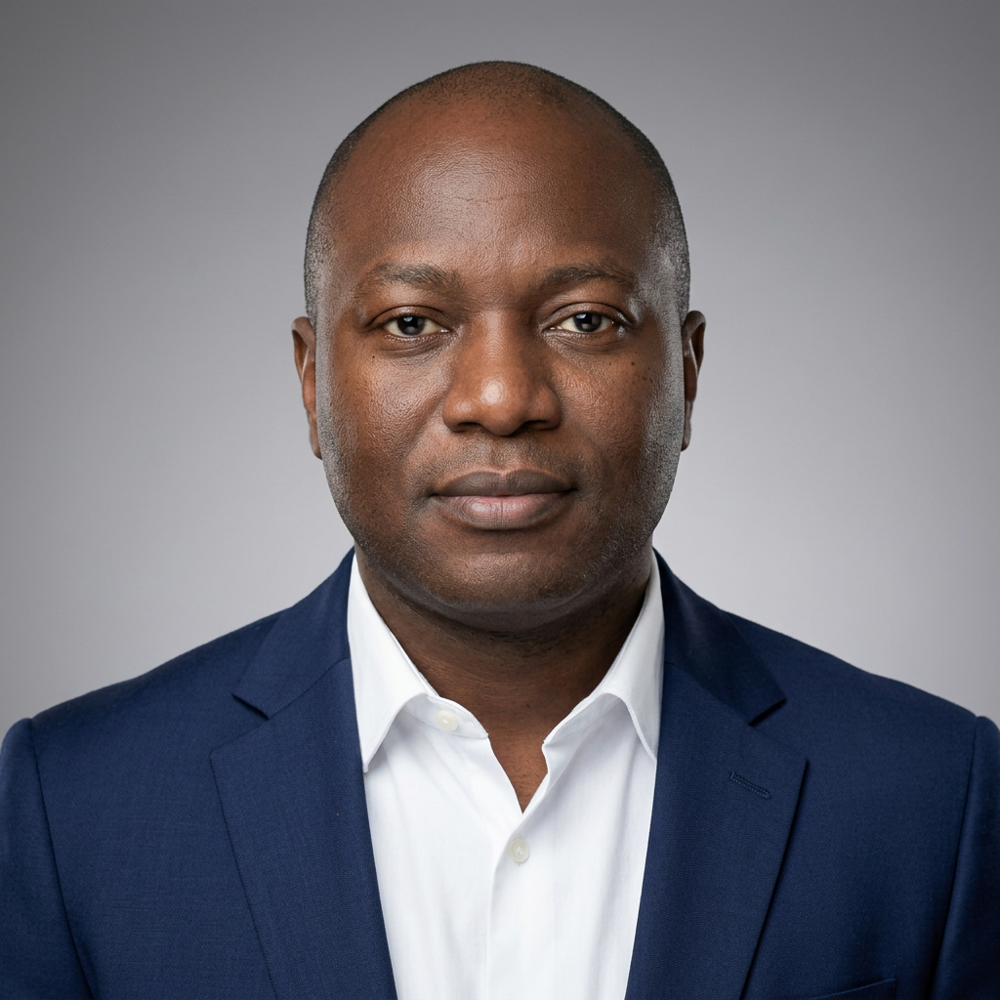

About Me

Hello! My name is Fabrice Paida. I am pursuing a Bachelor of Science in Applied Computer Science at Point Park University with a concentration in Networking and Security.
I currently work as a Data Center Technician II where I support enterprise infrastructure, networking equipment, and data center operations.
In addition to my coursework, I am currently developing a SmartRack Passport application for DataBank. The project uses QR codes attached to racks and equipment so technicians can quickly scan them with a mobile device to access rack information, equipment details, troubleshooting guides, maintenance records, and work instructions. The goal is to improve efficiency, reduce errors, and simplify data center operations by providing instant access to critical information.
My long-term goal is to become a Network and Cloud Engineer while building software solutions that solve real-world problems.
Professional Interests
- Computer Networking
- Linux Administration
- Cybersecurity
- Cloud Computing
- Software Development
- Data Center Technologies
Summer 2026 Course
This semester I am taking CMPS262 – Advanced Programming. The course focuses on object-oriented programming, algorithms, recursion, and problem solving.
Course Information
| Course | Instructor | Credits |
|---|---|---|
| CMPS262 | Jeff Seaman | 3 |
Contact Information
School Email: fpaida@pointpark.edu
Phone: (443) 814-6589
GitHub: github.com/fpaida
LinkedIn: linkedin.com/in/fabrice-paida-13568046